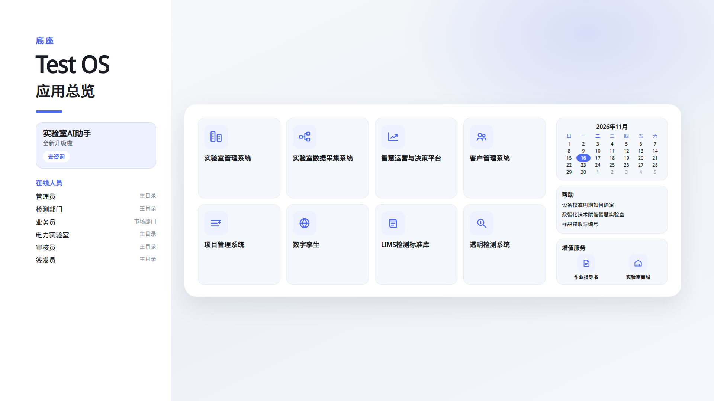
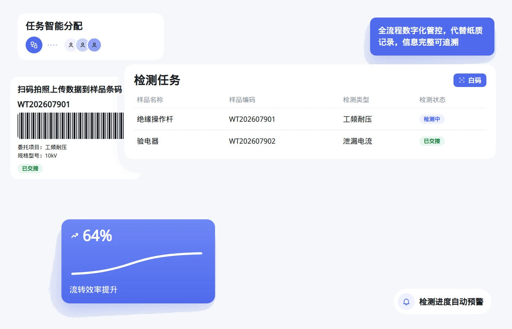
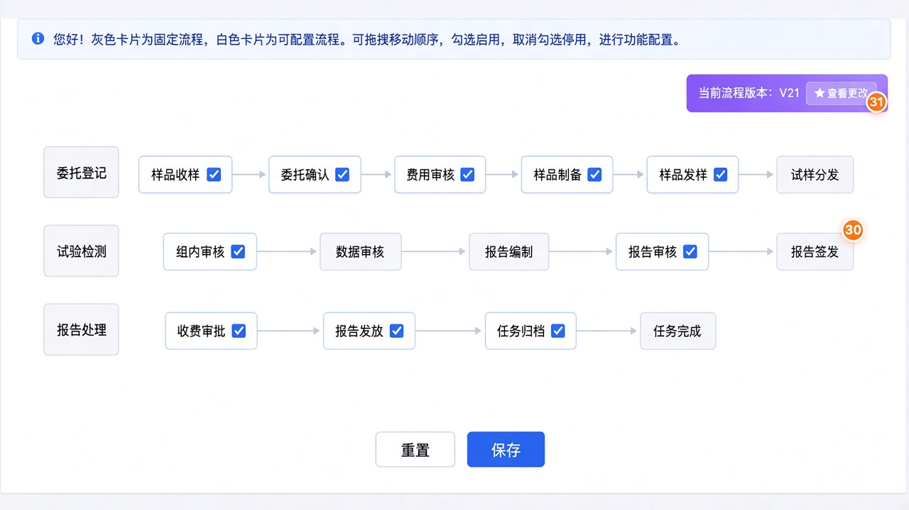
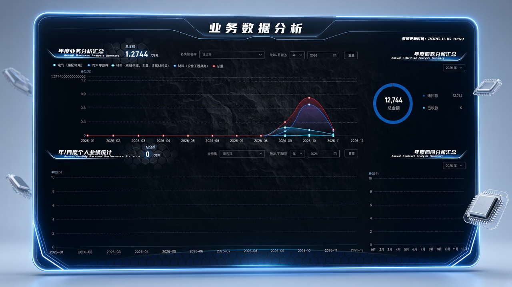
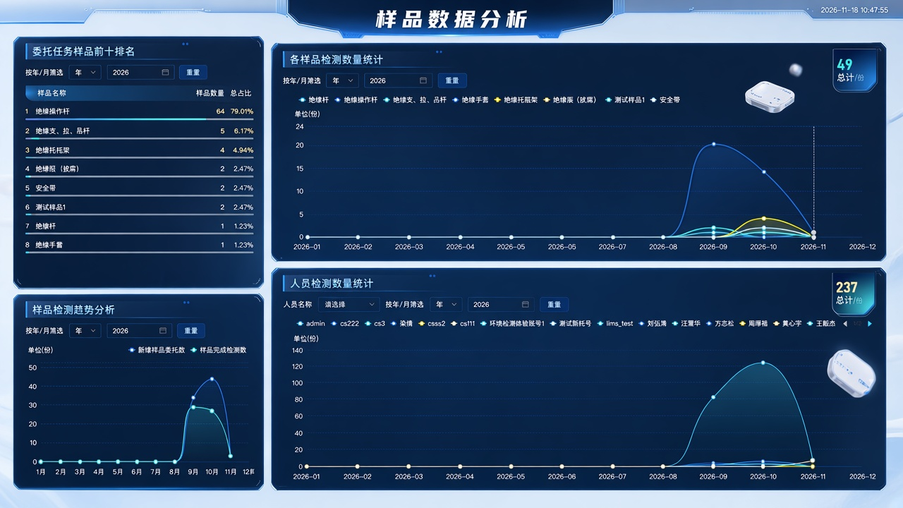
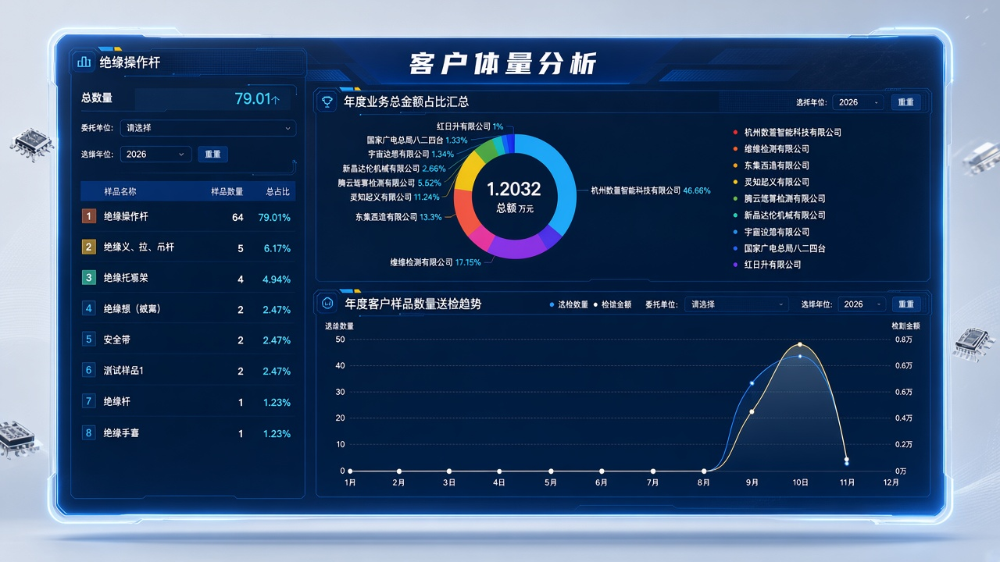
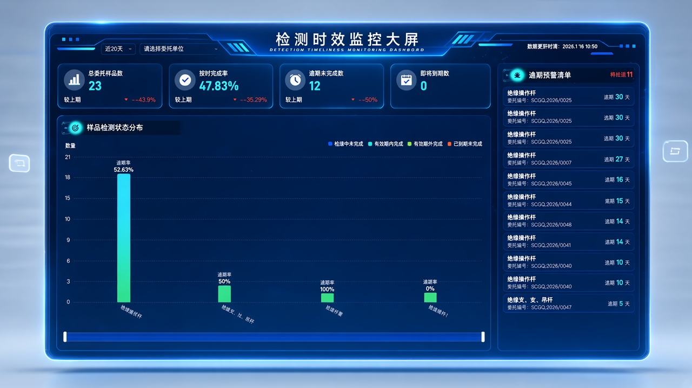
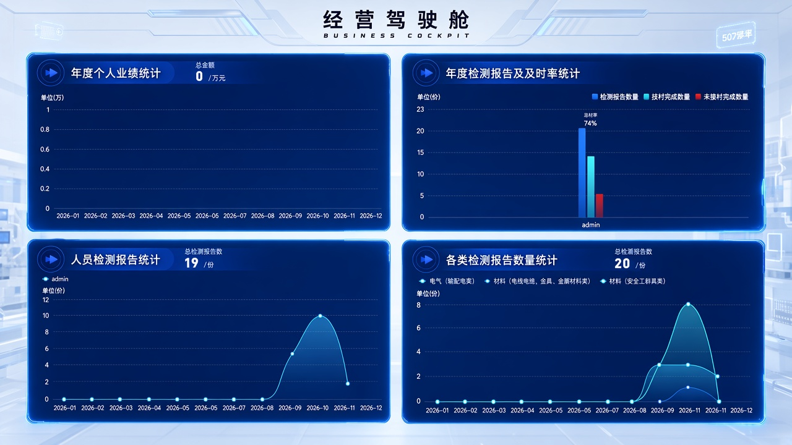
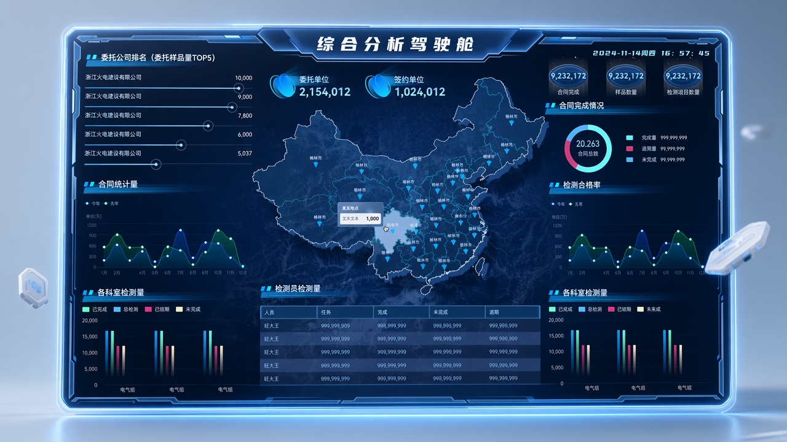

表格各存各的样品、结果、客户不在同一处
难共享数蚕 LIMS
实验室信息
管理系统
委托、采集、判定、报告和追溯，在同一套系统里走完。
- 数据直采与防篡改
直接抓取仪器数据，避免誊写。直采杜绝手改，原始记录可追溯。
- 检验标准内置与自动判定
国标、行标和企标入库。录入后自动比对，复杂公式由系统计算。
- 可视化模版自己改
按客户模版交付记录单和报告。之后客户自己改，不用再找我们。
- 全流程可追溯
每一步记下谁、在何时、做了什么，任务上可以回放。
01

数蚕 LIMS
传统实验室现状
数据、记录、报告和历史数据，各自为政。
- 数据缺乏统一管理
纸质记录和分散表格难以整合、难以共享。试验容易重复做，判断只能靠碎片信息。
- 手动记录与流程低效
样品信息和结果靠人工抄写，审批靠纸质签字。周期拉长，人力上去了，错误率也上去了。
- 报告生成效率低
手工整理后再导出到 Word 或 PDF。部门之间传文件会再拖一层，报告周期变长。
- 数据利用率低
备份和权限不成体系，误删或故障可能丢数。格式不统一的历史数据很难追溯和对比。
02
现在常见的做法
结果靠手抄纸质签字，漏项和笔误跟着走
耗时长报告另做一份从表格再导出到 Word 或 PDF
再排版历史数据对不上格式不统一，追溯和统计都费劲
难复用数蚕 LIMS
03 · 软件优势
流程标准化
委托、收样、分配、检测、审核、签发，全流程线上流转，责任到人。
- 扫码建卡
系统生成唯一编号。委托信息、检测项目、判定标准一次录完。
- 任务对人
谁做哪一项、做到哪一步，在任务上能对上人。逾期自动提醒。
- 线上流转
制备、发样、试验、审核和报告都在系统里走，不用拼表，也不用把过程文件传来传去。

委托登记与任务流转示意
测试设备的数据直采与防篡改
（效率与真实性）
仪器测试数据直接抓进系统，避免人工誊写。直采同时杜绝手改，原始记录真实、可追溯。
- 设备联网直采
直接抓取仪器测试数据，避免人工誊写。老旧设备可改造直采，串口、图像识别和智能采集节点都能接。
- 数据防篡改
很多招标项目对质量数据的真实性要求极高。数据直采杜绝人工修改数据，确保原始记录真实、可追溯。
- 采集端不落地
结果回传后直接进入判定和出单，不另存一份可以再改的本地账。
数蚕 LIMS · 采集方式
按协议对接。老旧检测设备可改造后直采。
按仪器协议从串口取数，结果直接回传。
没有数据口时读取屏幕或表头，不用手抄。
节点接入后读数进系统，不另落一份本地账。
仪器数据直接进系统。直采杜绝人工修改，原始记录可追溯。
数蚕 LIMS
04 · 软件优势
检验标准的内置与自动判定
电缆种类繁多（电力电缆、通信电缆、特种电缆等），适用的标准（如 GB/T、IEC、UL 等）及客户企标极为复杂。
- 标准库管理
系统内置并方便地维护各种国家标准、行业标准和企业标准。
- 自动判定与预警
检验数据录入后，系统自动与标准比对，判定合格或不合格。
- 复杂公式计算
导体电阻温度换算、绝缘厚度平均值、拉伸强度截面积等，由自定义公式计算，减少人工算错。
数据录入 · 电力电缆 标准已绑定
| 试验参数 | 结果 | 标准要求 | 判定 |
|---|---|---|---|
| 导体电阻 | 已按温度换算 | 对照绑定标准 | 合格 |
| 绝缘平均厚度 | 系统计算平均值 | 对照绑定标准 | 合格 |
| 拉伸强度 | 已按截面积计算 | 低于标准要求 | 不合格 |
拉伸强度不合格。公式由系统计算，录入后直接给出判定。
录入后按标准自动比对，复杂公式由系统计算。
可视化模版自己改
交付时按客户自己的模版，配好检测范围内的原始记录单和报告。之后客户自己改，不用再找我们。
- 按客户模版交付一套
交付时按客户现用的记录单和报告，配好其检测能力范围内的模版。上线就按这套出单。
- 改模版不用等我们
字段或版式要调，客户在页面上自己改。改完，后面的记录单和报告按新模版生成。
- 配置手把手教会
提供可视化配置，并手把手培训怎么改。学会之后，日常修改由客户自己完成。
原始记录单
编号SC2026/00790101
来源按客户模版生成
检测报告
待签发
样品绝缘操作杆 · 10kV
编号SC2026/00790101
委托单位客户甲
模版客户可自己修改
按客户模版交付记录单和报告，之后客户自己改。
数蚕 LIMS
追溯无死角
全生命周期记录留痕，随时回溯历史数据，满足合规性要求。
- 操作可查
从委托到归档，记下操作时间、操作人和操作内容。操作日志和登录日志可按人员、模块、时间和任务查阅。
- 修改留版本
原始记录保留版本。结果要改，走变更申请和审批，修改前后另行留痕。人离职或转岗，记录还在任务上。
- 评审对得上
样品编号从收样到报告一致。人员按授权上岗，设备处于有效校准。记录由系统生成，报告审核签发后出具。
05
任务回放 · SC2026/00790101
委托登记
委托员 · 11-02 09:12 · 建立委托
收样
收样员 · 11-02 10:40 · 扫码，生成样品编号
试验
检测员 · 11-03 14:05 · 回传工频耐压结果
更改
走变更审批 · 改前、改后单独留痕
签发
待审核通过后出具
数蚕 LIMS
设备校准与逾期提醒
维护校准证书、设备状态及试验项关联，设备逾期提前提醒。
- 逾期直接标出
设备逾期、临近下次校准会提醒，超期在列表里直接标出来。
- 证书跟着设备
校准证书跟着设备管理，校准状态一目了然。
- 对上试验项
设备可以关联到试验项，用在哪一项试验上能对上。
06

设备台账示意：校准状态一目了然，逾期直接标出。
数蚕 LIMS
通用权限管控
面向检测、校准、科研和生产现场等不同类型实验室，统一身份、统一角色、统一入口。
- 用户、角色、部门
一次登录进入 Test OS。人员归属部门，角色按页面授权。固定角色保留试验员、业务负责人、实验室主任等岗位，本单位特有岗位用自定义角色。
- 菜单按页面裁剪
菜单按系统、模块、页面显示或隐藏。未授权的页面默认不开放，不同类型实验室可以只露出自己要用的入口。
- 应用收在一个工作台
官方应用和本地应用可加入、移除、排序。实验室已有系统用外链接入。调岗改角色，离职取消授权。
07
Test OS · 权限中枢
- 用户管理
- 部门管理
- 角色管理
- 菜单管理
统一身份、统一角色、统一入口
用户角色部门菜单应用
- 试验员
- 实验室主任
- 系统管理员
- 业务负责人
Test OS 权限中枢：用户、角色、部门、菜单和应用。
数蚕 LIMS
流程按自己的
实验室来改
管理员按实际业务取消不需要的环节，并调整顺序。
- 去掉冗余环节
不需要的环节可以取消，流程按实验室实际来收。
- 顺序可以调整
拖拽调整流程顺序，勾选启用或停用。
- 按场景配置
不同检测活动不必共用同一条流程，用来去掉冗余、把效率提上来。
08

流程可按实验室配置：拖拽排序，勾选启用或停用。
数蚕 LIMS
标准入库，
结果自动判定
不合格当场标出，不用对照标准手算。
- 标准拆开入库
规格型号、试验参数、计算公式、修约规则和判定要求都在库里。
- 按库逐项给结论
系统给出合格或不合格，不合格标出原因，不能进入合格证打印。
- 换版只改标准库
标准换了，更新标准库，不必另改流程。
09
LIMS 检测标准库
工频耐压绝缘操作杆 · 10kV
按规定耐受合格泄漏电流按绑定限值
86 μA合格外观无裂纹、无损伤
表面裂纹不合格数蚕 LIMS
运行情况一眼看清
委托、样品、客户、时效和经营集中在可视化大屏上。管理人员不必逐条打开任务，展示内容可按实验室管理需要定制。
- 进度不用逐条翻
委托量、样品量和项目分布集中展示。检测进度卡在哪一步，打开大屏就能看见。
- 时效和负荷提前看见
客户体量、人员工作量和检测时效放在一起。积压和超时不用等到汇报才知道。
- 经营和运行对照着看
经营驾驶舱看业务健康度，综合分析看实验室整体运行，方便对照着做管理判断。
10






数蚕 LIMS
人在样品旁边
就能做
形态不只网页。配 LIMS App 和数据采集 App。
- LIMS App
从应用中心进入，快速登记。报告在手机上查看和下载。
- 数据采集 App
今日任务、按任务检测、现场确认并上传。
- 不用回办公室补
接任务、录数据、查进度，在样品旁边完成。
11


数蚕 LIMS
放在哪，怎么买
部署分云上和本地。功能是标准版加定制费用，大屏按需购买。
- 云上
上手快。适合想先跑起来、不想自己管服务器的实验室。
- 本地 / 私有化
部署在客户本地服务器上，数据安全合规，服务器由客户侧管理。
- 功能与服务
标准版加定制费用，大屏按需购买。服务可以买断加售后年费，也可以按年续费。
12
部署
云上
上手快。适合想先跑起来、不想自己管服务器的实验室。
部署
本地 / 私有化
部署在客户本地服务器上，服务器由客户侧管理。
购买
功能
标准版 + 定制费用。大屏按需购买。
购买
服务
买断 + 售后年费，或按年续费。
数蚕 LIMS
产品价值
流程、效率、数据和交付，放在同一套系统里。
- 流程规范化，降低人为差错
业务流程线上固化。关键节点审核通过才流转。电子签名与日志记录，对应 CNAS、CMA 等资质评审要求，不表示已经取得证书。
- 效率提升 30% 以上
自动生成委托单、收费单、原始记录和报告模版。任务推给责任人。数据直传，避免二次录入。
- 数据资产化
检测数据、客户信息和合同记录集中存放。驾驶舱看业务健康度。历史数据可追溯。
- 客户体验升级
客户可通过链接完成委托单签署。报告状态可查。报告按统一格式交付。
- 轻量，适合中小型实验室
操作逻辑清楚，权限分级。支持快速部署和扩展，投入低，见效快。
13